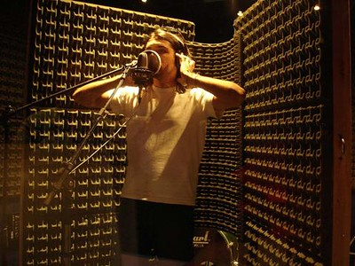
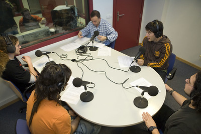
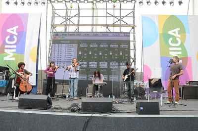

Producción musical
En esta area, que es la parte inicial de un proyecto musical, MM RECORDS te brinda los elementos necesarios para la creacion de pistas musicales conocidos tambien como "bips" bien sea creada a base de instrumentos musicales o creadas por medio de los diferentes programas que existen para ello; tambien introducir la voz del artista al bisp o pista y eliminar los defectos producidos por el sonido del aire al entonar una nota, tambien usar los autotun para la mejora de la vos del artista
Producción audiovisual
Hoy en dia existen diferentes medios de comunicacion, no solo es la radio. la evolucion ha sido notoria a medida del pasar del tiempo, ahora los medios de comunicacion tambien son visibles y auditivos. por esto, MM RECORDS tambien ha evolucionado para no quedarse atras, proporcionandote a ti que eres artista; las herramientas y personal capacitado necesarios para realizar tu produccion audiovisual y asi tengas una mejor promocion de tu proyecto musical en el mercado.

Publicidad
Sabemos que despues de tener un proyecto musical completo, es necesario promocionarlo el los diferentes medios de comunnicacion. Por esto, MM RECORDS tambien te ofrece planes publicitarios, para que tu proyecto llegue con exito a ser conocido por el publico a nivel mundial, contactanos para contarte en que consisten los planes.

Organización de eventos
Sabemos que te contrataran para eventos musicales en tu carrera como artista, y que a la hora de esto, puedes tener problemas con los equipos de luces, sonido, tarimas y mas para llevar a cabo la realizacion de un concierto. Por esto, MM RECORDS pone a tu disposicion todos estos elementos y el personal encargado del montaje y desmontaje de los equipos de sonido, tarimas, luces y mas, para una exelente y comoda presentacion.